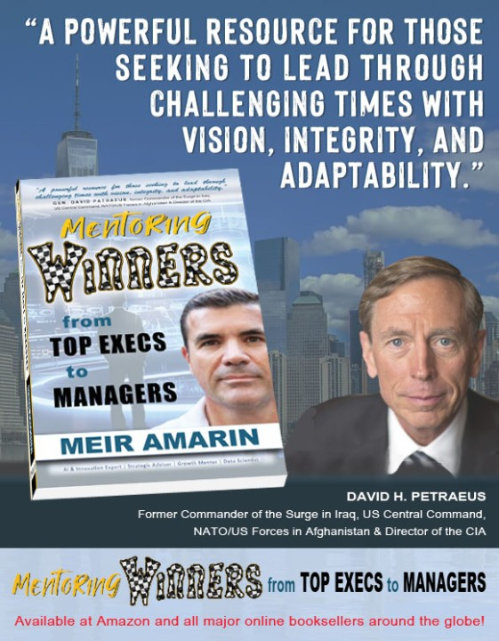

See What Others Miss. Decide Before It’s Obvious.
I work with a small number of CEOs and senior executives as a strategic thinking partner, helping them cut through complexity, challenge assumptions, and act with clarity when decisions matter most.
I work directly with CEOs and senior leaders to challenge their thinking, sharpen their perspective, and help them make better decisions under real pressure.
Strategic Clarity
Cut through complexity, politics, and pressure to deliver clear, high-consequence decisions that move organizations forward.
Executive Influence
Expand visibility, alignment, and credibility across boards, stakeholders, and teams, even in volatile environments.
Trusted Discretion
Confidential, outcome-oriented advisory reserved for leaders who carry real responsibility and cannot afford misalignment.
Two premium paths. Built for serious executives
Select leaders partner with me either for sustained strategic support or accelerated transformation. Both are intentionally limited.
Global Executive Advisory
A confidential, high-trust thinking partnership for CEOs and senior executives navigating complexity, scale, and critical decisions.
Limited to a small number of leaders at any time
Ongoing strategic thinking sessions
Direct access during critical moments
Continuous challenge, perspective, and decision clarity
Executive Transformation
A focused, high-intensity engagement designed to unlock clarity, shift perspective, and accelerate decision quality over a defined period.
Weekly or bi-weekly deep-dive sessions
Focused on real, current leadership challenges
Immediate application to decisions and actions
Designed to create visible momentum quickly
Strategic counterpart to CEOs and senior leaders
Outcomes elite leaders consistently achieve
When clarity replaces noise, better decisions follow, and the impact compounds quickly.
Mentoring Winners From Top Execs to Managers
This book is not theory. It reflects the principles and patterns I’ve seen repeatedly across leadership, mentoring, and real organizational challenges.
Proven framework drawn from real executive mentoring engagements
Endorsed by global leaders and used by HR teams worldwide
Connects personal leadership growth to scalable organizational impact

“A powerful resource for those seeking to lead through challenging times with vision, integrity, and adaptability.”
“A must-read for anyone serious about developing bold, forward-thinking leaders.”
“A master class in mentorship, innovation, and transformation that distills real-world experiences into practical wisdom.”
If This Resonates, You Already Know Why
If you're carrying decisions that matter, you don’t need more input. You need clarity, perspective, and a space where your thinking can be challenged. I work with a limited number of leaders each year. Not every request is accepted.